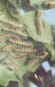
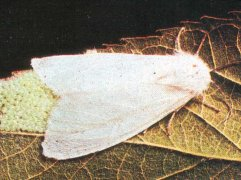
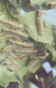

Amerikai fehér szövőlepke
Hyphantria cunea
Gyümölcsfáink veszélyes kártevője.
Kétnemzedékes, a telet báb alakban tölti. A falánk hernyók kezdetben
hernyófészekben élnek. Szövedékükkel egyre több levelet vonnak be és rágnak meg.
A kezdetben egy-két levélre kiterjedő hernyófészkek végül egész ágyakat vonnak
be. A fejlett lárvák elhagyják a hernyófészket, azt követően egyesével rágják a
leveleket, esetenként a gyümölcsök felületét is. A tavaszi nemzedék májusban, a
nyári júliusban rajzik. A nőstények petéiket csoportosan a levelek fonákára
rakják. A kikelő kis hernyók először a levél fonákát hámozgatják, majd
létrehozzák a rájuk jellemző hernyófészkeket. A kis hernyófészek
eltávolításával a kártétel megelőzhető.
Vegyszeresen is eredményesen védekezhetünk ellenük.
Védekezés:
- "Vadászó jellegű" permetezés (ilyenkor csak a hernyófészkeket
permetezzük le).
- A lombozat permetezése erős kártétel vagy nagyüzemi gyümölcsös esetében.
Ajánlott növényvédő szerek:
 |